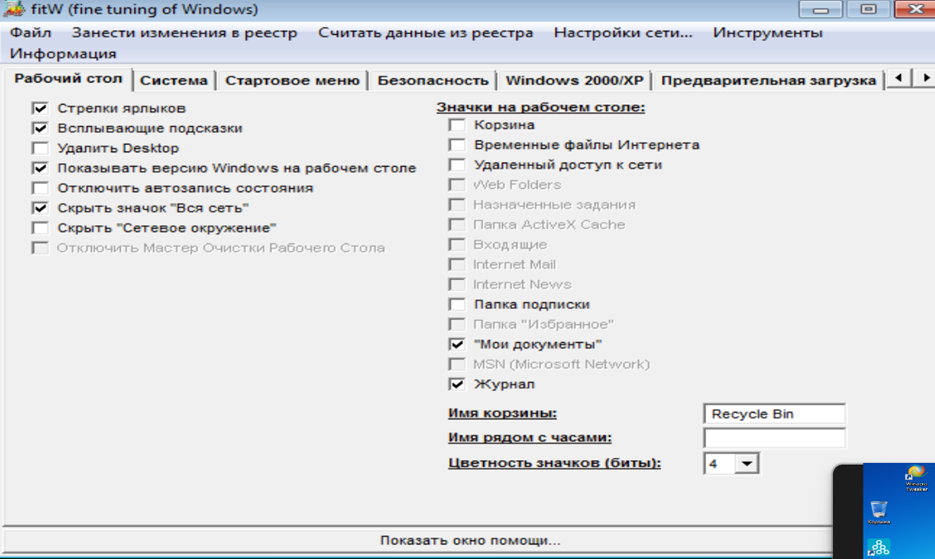
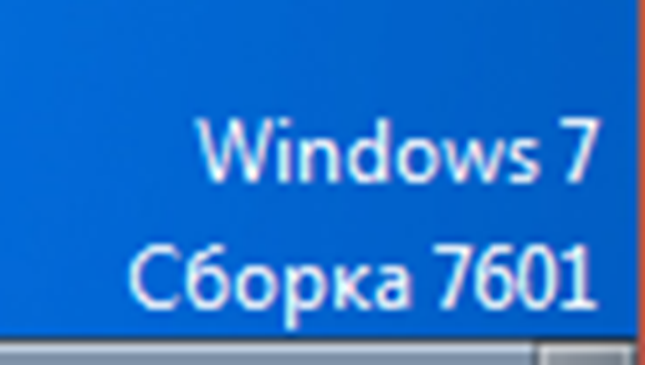
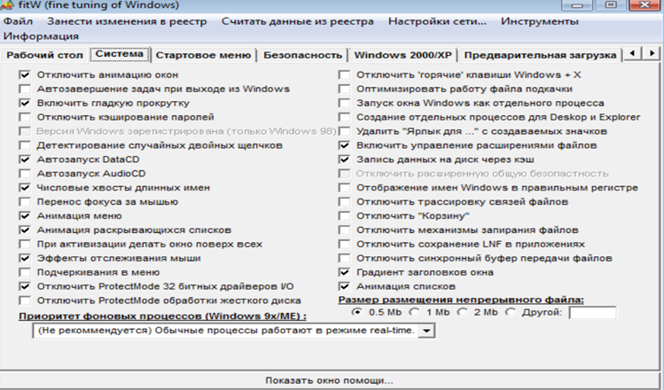
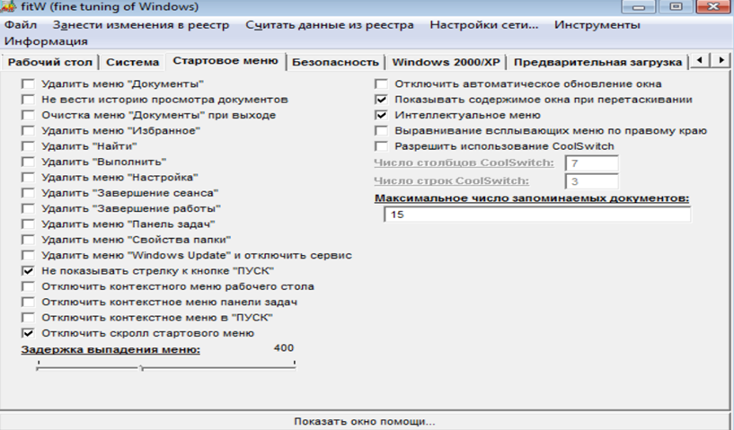
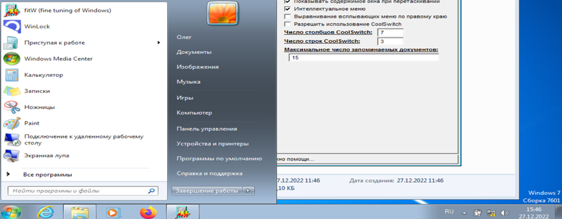
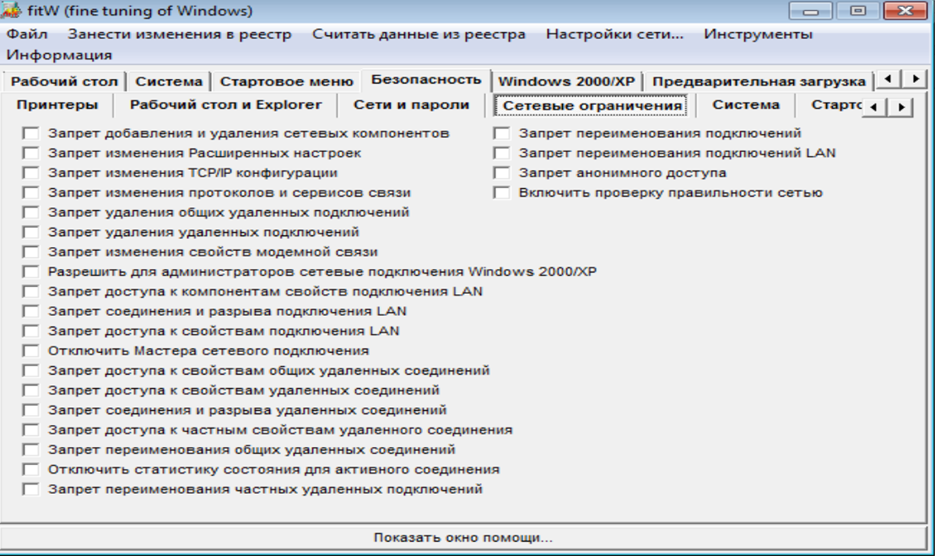
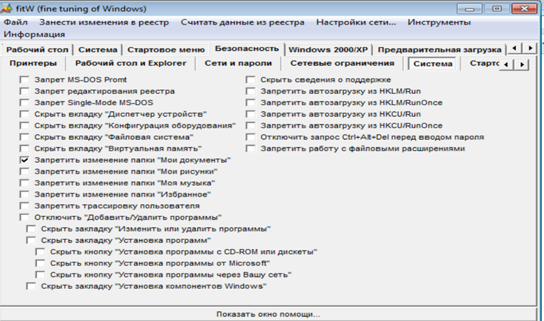
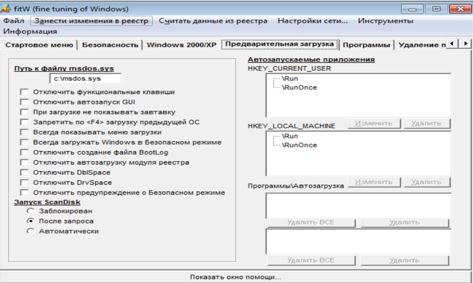
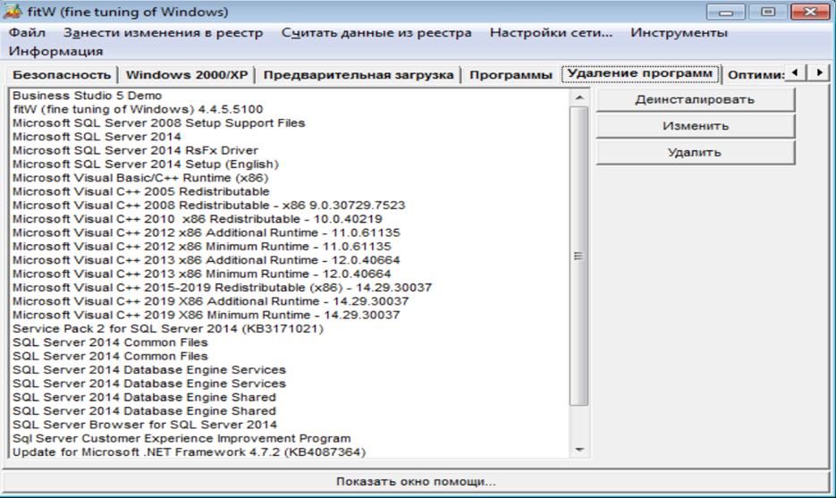

Программа не была оптимизированна для операционных систем выше XP, но на 7-ой Windows может установиться и запуститься без каких либо проблем. В программе есть множество окон. Рассмотрим их последовательно
Рабочий стол Рабочий стол
В данной вкладке множетсво вариантов настройки для рабочего стола. Тут можно вывести версию операционной системы. Удалить десктоп, и множесто другого. После изменений то, что не было сохранено система выделяет красным, что бы изменения пришли в силу необходимо занести их в реестр программы отдельной кнопкой.
Версия операционной сисетмы
Система
В данной вкладке есть множество параметров. Помимо сугубо визуальных – отключение анимаций в системе эта вкладка предлагает нам Оптимизацию работы файла подкачки, отключение корзины, создание доп процессов для Десктоп и эксплоувер.
Вкладка система
Стартовое меню
Данный блок позваляет работать с Стартовым меню. Удалять различные визуальные объекты, и включить CoolSwitch.
Стартовое меню
Большинство функций данной программы не работает на более позних версиях операционной системы. Изменения введённые не сработали. Единственное изменение, которые было введено – отключение прокрутки в меню пуск.
Отключение прокрутки
Во вкладке сетевые ограничения можно тонко запретить запретить сети.
Безопасность
Во вкладке система есть возможность работы с функциями файловой системы. Запрет изменения определённых папок, скрыть определённые папки. И помимо этого есть вохможность запретить автозагрузку определённых процессов.
Система
Предварительная загрузка
Данная вкладка позваляет настраивать более тонко, чем вкадка диспетчера задач какие программы могут использовать автозагрузку с полноценным списком. А так же некоторые изменения связанные со внешним видом ОС во время загрузки. И отключение DrvSpase, DblSpase, отключить создание файла BootLog.
Удаление программ
Вкладка позволяет удалить программу, изменить или деинсталоировать. Это повторяет функционал встроенный в windows. Вывод
На данный момент программа устарела и не все функции исправно работают на версиях Windows выше xp. Но она позволяет более гибко и понятно настраивать операционную систему, чем встроенные функции ОС в более поздних версиях.